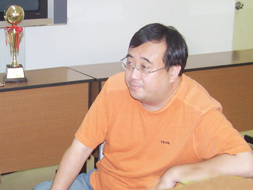

那威：十年追求终成正果 吴镝站到五子棋世界顶峰
#1 那威：十年追求终成正果 吴镝站到五子棋世界顶峰 作者：有志青年 发表时间：2007-8-16 7:30:06

新浪体育讯 北京时间8月15日，在俄罗斯秋明市进行的第10届连珠世锦赛A组经过11轮激战落下帷幕，中国选手吴镝战胜最后一个对手俄罗斯的苏切科夫，以11战积9分的优异成绩获得冠军。中国棋手首夺五子棋世界冠军。
在吴镝五段夺世界冠军之际，笔者连线了中国五子棋运动的发起者那威九段，请他谈谈自己的感想，那威说：“现在我的心情很平静，中国棋手早就该有这么一天了！五子棋已经在中国发展了十五年，这是充满酸甜苦辣的十五年。我们拥有一大批象吴镝一样强大的棋手，他们缺的就是表现的机会和出去的条件。吴镝学棋已经十年，这个成绩是对吴镝这十年执着追求的最好回报。”
那威表示：“在吴镝之前，中国棋手的最好成绩是白涛在99年在北京举行的第六届世界锦标赛中夺得过B组第一名。吴镝的可贵之处，就在于是他走出国门，通过艰苦的 预选赛，打入了强手入林的A组，最终夺得了代表世界连珠个人最高水平的冠军。历史给了吴镝机会，吴镝自己也把握了这个机会。机会，永远是留给有准备的人！”
“吴镝的夺冠，说明中国 五子棋发展到今天，需要的不是起步，而是发展，是提高，是更上一层楼。吴镝的荣誉不仅仅属于他个人，是属于中国，属于中国五子棋。”说到这里，一直自称自己很平静的那威有些激动：“希望这次吴镝和仇云飞回国后，能把自己国际大赛的经验传授给国内棋手；也希望吴镝的夺冠，能唤起更多中国棋手的热情，投入到国际大赛中去，展现我们强大的中国五子棋。同时更希望相关部门，给中国棋手走出国门，创造条件。”(叶子)
#2 Re:那威：十年追求终成正果 吴镝站到五子棋世界顶峰 作者：连珠木易 发表时间：2007-8-16 19:20:20
同时更希望相关部门，给中国棋手走出国门，创造条件。”
是啊！无敌因为签证迟迟办不好，差一点就错过了本界世锦赛，否则，我们哪里来的世界冠军啊！相关部门应该反思。。。